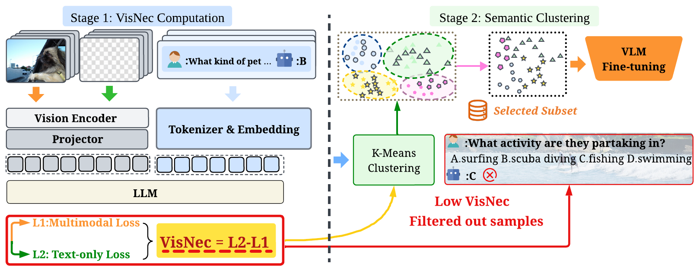
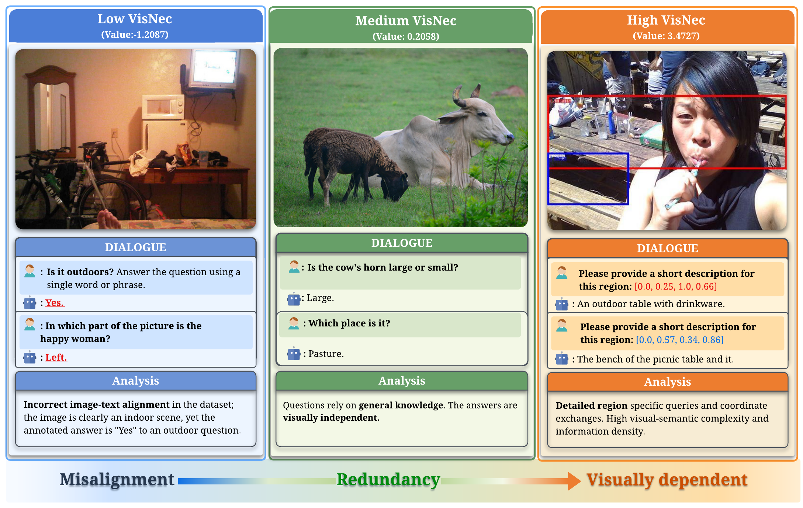
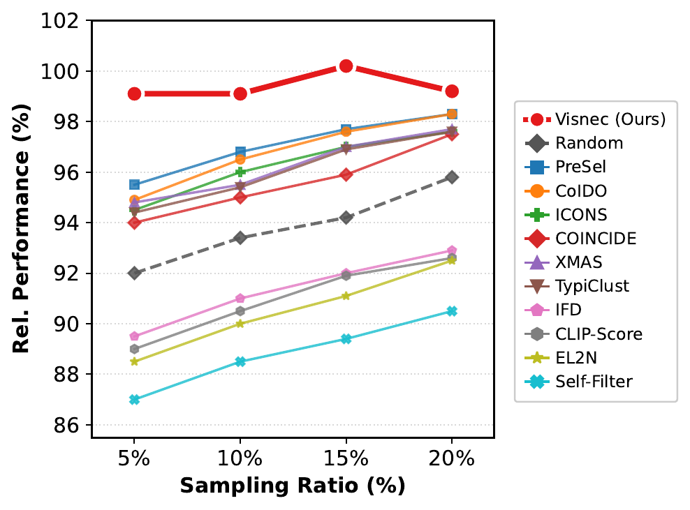

The image contradicts the annotation, so the sample should be filtered rather than trusted.

VisNec computes the gap between multimodal loss and text-only loss, then performs semantic clustering to keep a visually necessary and task-diverse subset for VLM fine-tuning.
Abstract
The effectiveness of multimodal instruction tuning depends not only on dataset scale, but critically on whether training samples genuinely require visual reasoning. Existing instruction datasets often contain visually redundant samples that are solvable from text alone, as well as multimodally misaligned supervision that can degrade learning.
We propose VisNec, a principled data selection framework that measures the marginal contribution of visual input during instruction tuning. By comparing predictive loss with and without visual context, VisNec identifies whether a training instance is vision-critical, redundant, or misaligned. Combined with semantic clustering, VisNec selects compact, diverse, and visually necessary subsets for data-efficient multimodal instruction tuning.
Case Study
VisNec scores form an interpretable spectrum rather than a simple ranking. Low VisNec reveals mismatched supervision where the annotated answer conflicts with the image; medium VisNec often corresponds to redundant samples whose answers are visually independent; high VisNec captures visually dependent samples that require dense image evidence.

The answer can be inferred from general knowledge or language priors with limited visual need.
The instruction requires localized visual evidence, making the sample valuable for tuning.
Sampling Ratio Study
VisNec remains consistently strong across sampling ratios and peaks around the top-15% subset, outperforming random selection and other selection baselines in relative performance.

Baseline Comparisons
Under the same 15% data budget, VisNec consistently outperforms competitive data selection baselines on both LLaVA-665K and Vision-Flan-186K. Rel. reports average relative performance normalized by the corresponding full-data baseline.
LLaVA-v1.5-7B on LLaVA-665K
15% sampling ratio, 98K selected samples.
| Method | VQAv2 | GQA | LLaVA-Wild | SQA-I | TextVQA | MME-P | MMBench (en) | MMBench (cn) | POPE | MM-Vet | Rel. |
|---|---|---|---|---|---|---|---|---|---|---|---|
| Full-Data (665K) | 79.1 | 63.0 | 67.9 | 68.4 | 57.9 | 1476.9 | 64.3 | 58.3 | 86.4 | 30.0 | 100.0 |
| Random | 75.3 | 55.1 | 58.8 | 67.8 | 54.3 | 1397.5 | 61.0 | 53.5 | 84.9 | 30.2 | 94.2 |
| Self-Filter | 74.0 | 56.3 | 60.6 | 62.3 | 51.4 | 1356.5 | 48.1 | 45.4 | 86.3 | 29.0 | 89.3 |
| EL2N | 76.1 | 54.7 | 59.0 | 66.5 | 50.2 | 1405.2 | 58.2 | 48.5 | 83.3 | 30.0 | 91.9 |
| TypiClust | 76.0 | 59.8 | 65.2 | 68.2 | 53.3 | 1396.2 | 64.3 | 57.1 | 85.6 | 29.7 | 96.9 |
| IFD | 74.0 | 57.8 | 62.3 | 66.5 | 51.8 | 1307.2 | 57.2 | 50.6 | 86.6 | 28.1 | 92.1 |
| PreSel | 76.5 | 57.9 | 65.6 | 70.1 | 55.2 | 1457.7 | 64.8 | 56.5 | 85.4 | 29.6 | 97.7 |
| XMAS | 75.1 | 61.2 | 62.4 | 67.0 | 55.2 | 1485.7 | 64.3 | 54.1 | 85.8 | 31.0 | 97.3 |
| COINCIDE | 76.1 | 60.2 | 64.9 | 67.7 | 54.8 | 1414.9 | 60.5 | 53.9 | 86.4 | 28.5 | 95.8 |
| CLIP-Score | 71.7 | 56.9 | 61.3 | 64.5 | 53.4 | 1380.3 | 51.0 | 48.0 | 84.0 | 29.9 | 92.0 |
| CoIDO | 75.8 | 61.0 | 66.7 | 68.2 | 56.0 | 1419.5 | 63.3 | 55.5 | 85.6 | 31.4 | 97.7 |
| ICONS | 76.3 | 60.7 | 65.3 | 65.3 | 55.2 | 1435.6 | 63.1 | 55.8 | 85.7 | 30.4 | 97.1 |
| VisNec (ours) | 78.0 | 60.8 | 69.8 | 67.9 | 56.2 | 1457.2 | 64.9 | 59.1 | 86.0 | 32.1 | 100.2 |
LLaVA-v1.5-7B on Vision-Flan-186K
15% sampling ratio, 28K selected samples.
| Method | VQAv2 | GQA | LLaVA-Wild | SQA-I | TextVQA | MME-P | MMBench (en) | MMBench (cn) | POPE | MM-Vet | Rel. |
|---|---|---|---|---|---|---|---|---|---|---|---|
| Full-Data (186K) | 69.6 | 46.0 | 35.7 | 55.6 | 38.3 | 1238.1 | 53.4 | 48.2 | 85.7 | 27.7 | 100.0 |
| Random | 66.5 | 43.8 | 33.5 | 62.1 | 38.7 | 1238.6 | 43.6 | 43.1 | 83.0 | 28.1 | 96.7 |
| Self-Filter | 64.9 | 42.5 | 32.1 | 59.3 | 42.6 | 1262.2 | 42.1 | 43.8 | 80.9 | 25.1 | 95.0 |
| EL2N | 63.6 | 42.2 | 32.8 | 62.7 | 42.4 | 1253.8 | 44.7 | 37.7 | 79.5 | 27.1 | 95.2 |
| TypiClust | 65.8 | 43.1 | 30.4 | 59.2 | 37.7 | 1194.1 | 32.4 | 45.1 | 81.6 | 28.2 | 92.0 |
| IFD | 65.0 | 42.4 | 29.8 | 57.8 | 42.0 | 1210.9 | 30.4 | 40.8 | 82.6 | 26.9 | 91.6 |
| PreSel | 64.1 | 41.9 | 39.4 | 66.2 | 39.7 | 1218.8 | 50.4 | 45.4 | 84.1 | 29.1 | 100.6 |
| XMAS | 65.5 | 49.4 | 34.2 | 58.1 | 42.4 | 1151.2 | 51.1 | 44.0 | 76.2 | 24.3 | 96.9 |
| COINCIDE | 66.0 | 44.5 | 34.6 | 63.9 | 33.0 | 1184.4 | 49.6 | 48.2 | 84.3 | 26.1 | 97.1 |
| CLIP-Score | 63.0 | 41.6 | 31.2 | 62.3 | 39.7 | 1058.0 | 37.5 | 44.2 | 82.0 | 28.0 | 92.2 |
| CoIDO | 66.7 | 46.8 | 37.6 | 66.2 | 43.2 | 1298.8 | 51.4 | 47.3 | 85.6 | 28.3 | 103.6 |
| ICONS | 67.2 | 48.8 | 35.4 | 60.2 | 49.9 | 1252.5 | 51.3 | 45.4 | 83.0 | 28.6 | 103.2 |
| VisNec (ours) | 65.0 | 57.1 | 39.5 | 74.5 | 51.6 | 1505.5 | 62.6 | 53.1 | 82.0 | 32.1 | 115.8 |
Method Overview
Estimate Visual Necessity
Compute the loss gap between multimodal and text-only inference for each instruction sample.
Preserve Task Diversity
Cluster semantic instructions and select high-necessity examples within each cluster.
Tune Efficiently
Fine-tune VLMs with a top-15% VisNec subset instead of the full instruction dataset.
Released Artifacts
llava_v1.5-7b-top15.jsonllava_v1.5-7b-top15_vf.jsonllava_v1.5-7b-top15_k20-lora/llava_v1.5-7b-top15_vf-lora/
Citation
If you find VisNec useful in your research, please cite:
@misc{dong2026visnecmeasuringleveragingvisual,
title={VisNec: Measuring and Leveraging Visual Necessity for Multimodal Instruction Tuning},
author={Mingkang Dong and Hongyi Cai and Jie Li and Sifan Zhou and Bin Ren and Kunyu Peng and Yuqian Fu},
year={2026},
eprint={2603.01195},
archivePrefix={arXiv},
primaryClass={cs.CV},
url={https://arxiv.org/abs/2603.01195},
}